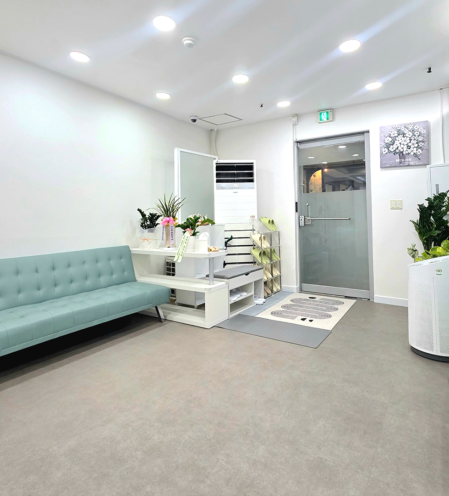

음악치료
정서·표현·상호작용을 음악 경험으로 확장합니다.
자세히 보기 →ULMOA · BUCHEON SANG-DONG
음악·인지·언어·놀이치료와 심리상담을 한 곳에서.
각자의 속도와 표현 방식을 존중하며 필요한 영역을 함께 찾습니다.



START HERE
치료 이름을 먼저 고르지 않아도 괜찮습니다.
현재 어려움에서 출발해 필요한 전문영역을 연결합니다.
OUR TEAM
울모아는 각 영역의 전문가가 자신의 전문성을 바탕으로 회기를 설계합니다. 자격과 경력은 공개된 범위에서 투명하게 안내합니다.
전문가 전체 보기 →SPACE
홈페이지 사진은 울모아의 실제 공간입니다.
방문 전 센터 분위기를 미리 확인할 수 있어요.
VOUCHER & SUPPORT
우리아이심리지원 · 우리가족통합심리지원 · 아동비전형성 · 정신건강토탈케어 등 현재 이용 가능한 지원사업을 정리했습니다.
CONTACT